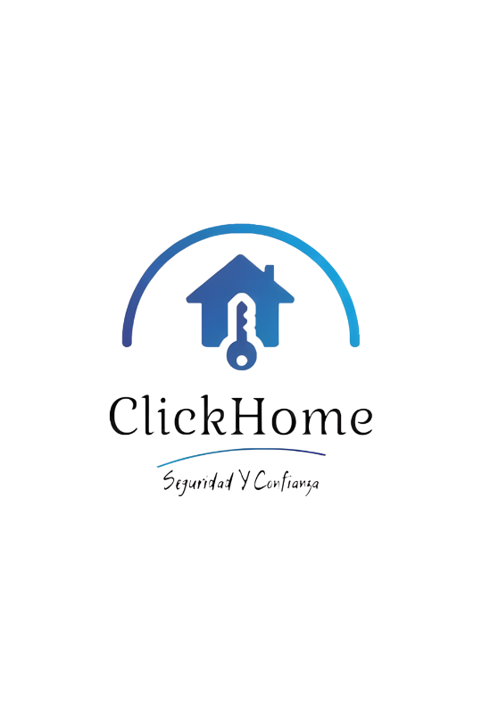
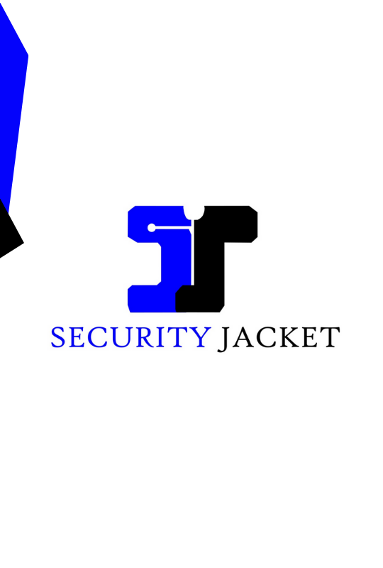
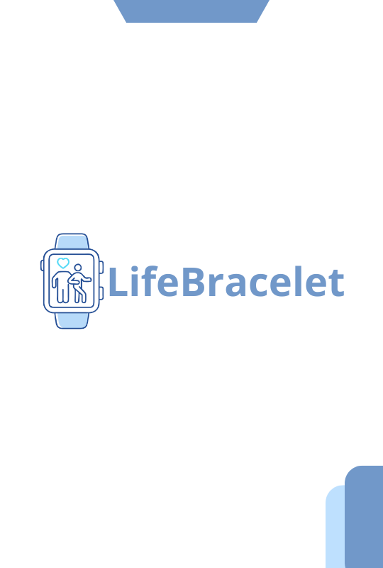

El proyecto Sdryer tiene como propósito transformar una tarea de hogar que suele ser tardada e incómoda en aquellos lugares donde no se cuenta con el espacio suficiente para el secado de prendas. Ejemplos: apartamentos, casas rodantes, habitaciones, etc; ya sea por políticas de propiedad (con las cuales betan los espacios de ventanas para estas actividades), o por simple falta de ventilación.

ArtByte Technology
ArtByte Technology
El proyecto "Art Byte" pretende desarrollar una máquina autónoma para tatuar letras en el antebrazo. Se busca mejorar la precisión y eficiencia del proceso, empleando tecnología moderna. Se plantea el desarrollo de una aplicación que interactue con la maquina.

Safe Steps
Safe Steps
Safes Steps es un proyecto enfocado en dar solución a las problematicas que enfrentan las personas con discapacidad visual, brindando una solución que toma las herramientas ya existentes y adapta herramientas digitales para que ellos puedan optimizar sus desplazamientos y asi mejorar su calidad de vida
MEDFLY
MEDFLY
En la actualidad acceder a servicios de medicina es un desafío significativo para las poblaciones que viven en zonas de difícil acceso, las condiciones de infraestructura, limitaciones geográficas, edad avanzada de los pacientes, entre otras circunstancias complican significativamente la entrega de suministros médicos.
Frente a esta problemática este proyecto busca de manera innovadora fabricar un Dron que permita beneficiar y solucionar la entrega de medicamentos con un peso aproximado de 150g.
Doce Digital
Doce Digital
En nuestra empresa de marketing y publicidad, nos apasiona impulsar el éxito de los restaurantes de todos los estilos gastronómicos. Desde comida gourmet hasta sabores tradicionales, la idea es que todos nuestros usuarios encuentren opciones para su estilo de vida y gusto personal, estamos comprometidos a destacar la esencia única de cada establecimiento. Con estrategias innovadoras y creativas, ayudamos a nuestros clientes a destacarse en un mercado competitivo, captando la atención de nuevos clientes y fidelizando a los existentes. Ya sea a través de campañas en redes sociales o estrategias de marketing digital, estamos aquí para llevar la visión de nuestros restaurantes aliados a un siguiente nivel.

Weel Up
Weel Up
Weel Up te ofrece varias ventajas para tu rodada. Con esta aplicación, puedes: 1 Saber cuántas personas van en tu rodada. 2 Obtener el tiempo estimado que te llevará trasladarte de un punto a otro. 3 En caso de que alguien se varé, podrás enviar un mensaje de alerta.